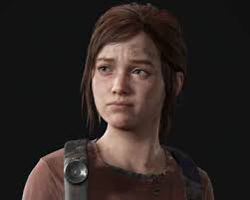
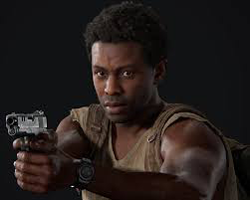

El juego nos presenta diversos personajes interesantes, entre los que se destacan 10 personajes principales en esta maravillosa historia. Por orden de aparición, son:
Sarah Miller es la hija de Joel Miller. Ella es el primer personaje jugable que se nos presenta en la historia. Aparece en el prólogo del juego, y la controlamos cuando toda la infección comienza a propagarse en Estados Unidos.
Joel Miller es el protagonista de esta historia. Él es serio y vive atormentado por un evento del pasado que lo dejó en depresión durante muchos años, es amigo de Tess y ambos hacen encargos contrabandistas para subsistir en este vasto y desolado mundo. Es capaz de manejar armas y autos con facilidad y es el encargado de llevar a Ellie a la base de Las Luciérnagas. En este viaje, que se siente como un paseo por el infierno, la niña y él acabarán formando un vínculo emocional muy fuerte que los mantendría unidos hasta el final del recorrido.
Es el hermano de Joel. Al igual que él, sabe manejar armas, lo que en el prólogo del juego y a lo largo del mismo ha sido muy útil. Sin embargo, Joel y Tommy no se vieron en mucho tiempo, así que el encargado de llevar a la niña buscará también la forma de localizar a su hermano, del que lo único que sabe es que se encuentra en un refugio que funciona como un poblado autosuficiente.
Tess es la amiga y acomapañante de Joel durante muchísimos años y en una parte de la historia. Es amiga de Marlene y, gracias a eso, pueden concretar su trato ya que Marlene confia en ella. Además, es quien convence a Joel de llevar a Ellie hacia la base de Las Luciérnagas cuando este piensa desistir al haber empatizado ella con la chica previamente.
Es la principal líder del grupo rebelde de Las Luciérnagas que se opone al control militar de FEDRA (La Agencia Federal de Respuesta a Desastres, en Español). Es quien le da a Joel y a Tess el encargo de transportar a Ellie a su destino. Tess conoce muy bien a Ellie ya que, en su momento, había sido una amiga muy cercana a su madre y sabe por qué es importante que llegue a salvo a su otra base.
Ellie es la coprotagonista del juego. Es huérfana, aunque estuvo viviendo con Marlene toda su vida ya que su madre murió en proceso de parto. Es muy importante, no solo para Joel, sino para la humanidad, ya que contiene la clave para hallar una cura contra la Infección Cerebral por Cordyceps. Esto es porque ella es inmune a esta infección gracias a que su madre dio a luz estando infectada. Ellie sabe manejar armas gracias al entrenamiento militar infantil que los de FEDRA hacían con el fin de erradicar a Las Luciérnagas.
Bill es un amigo de Joel y Tess. Vive solo en una cuidad que queda a 4 millas del capitolio donde los caminos de Joel y Tess se separan. Bill es un gran constructor y un genio para hacer diversas trampas, gracias a esto él pudo sobrevivir en soledad durante muchos años.
Henry y Sam son 2 hermanos que se apartaron de su grupo. Estos se encuentran con Joel y Ellie en una ciudad en la que ellos se estaban escondiendo de un grupo militar opresor que controlaba a la ciudad. Ellie se hace amiga de Sam al tener los 2 edad similar.
David es un antagonista del juego. Dirige un poblado en una zona nevada donde escasea la comida pero abundan los habitantes. Esta condición, sumado a que las cacerías daban cada vez peores resultados, acabó haciendo que David tome la decisión de alimentar a su pueblo con carne humana, para que así sobreviva la mayor cantidad de habitantes. Esto genera en él un debate moral ya que hacer esto iba en contra de su religión. David se encuentra con Ellie cuando esta busca ayuda y, aunque en principio se muestra amable con ella, sus oscuros motivos pronto salen a la luz.